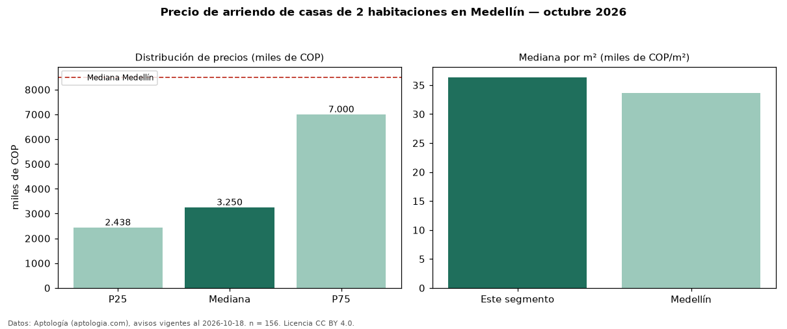

Precio de arriendo de casas de 2 habitaciones en Medellín — octubre 2026
Con 156 avisos vigentes, el canon mediano de casas de 2 habitaciones en arriendo en Medellín es COP 3,25 millones al mes. Frente a la mediana de todos los casas en arriendo de Medellín (COP 8,50 millones), queda 62 % por debajo. Por metro cuadrado, la mediana es COP 36.364/m² al mes (n = 147 avisos con área). La mitad central de los avisos va de COP 2,44 millones a COP 7,00 millones (razón 2,9), una dispersión alta. Con el precio por m² de venta del mismo segmento (COP 5,19 millones/m²), la rentabilidad bruta implícita es 8,4 % anual (aproximación con medianas de ofertas distintas). El área mediana anunciada es 95 m². El estrato más frecuente es 4 (31 % de los avisos con estrato). 58 % de los avisos con el dato declara parqueadero o cochera. Datos: Aptología (aptologia.com), CC BY 4.0 — https://www.aptologia.com/arriendo/medellin. Archivos: PDF, CSV con las cifras y gráfica PNG.

| Avisos únicos | 156 |
|---|---|
| Percentil 25 | COP 2.437.500 |
| Mediana | COP 3.250.000 |
| Percentil 75 | COP 7.000.000 |
| Mediana por m² | COP 36.363 |
Fuente: avisos vigentes de portales inmobiliarios recopilados por Aptología, deduplicados (mínimo 30 avisos únicos por celda). Precios pedidos, no cerrados. Fecha: 2026-10-18.